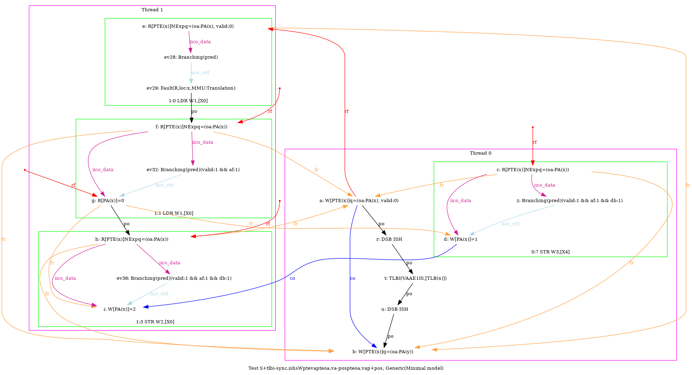
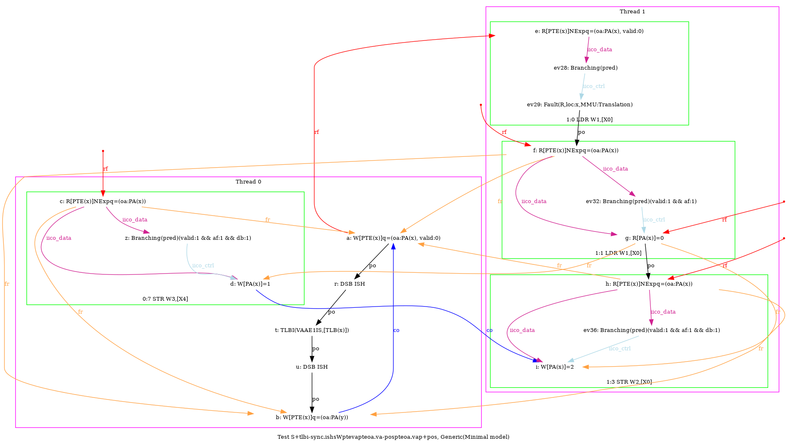
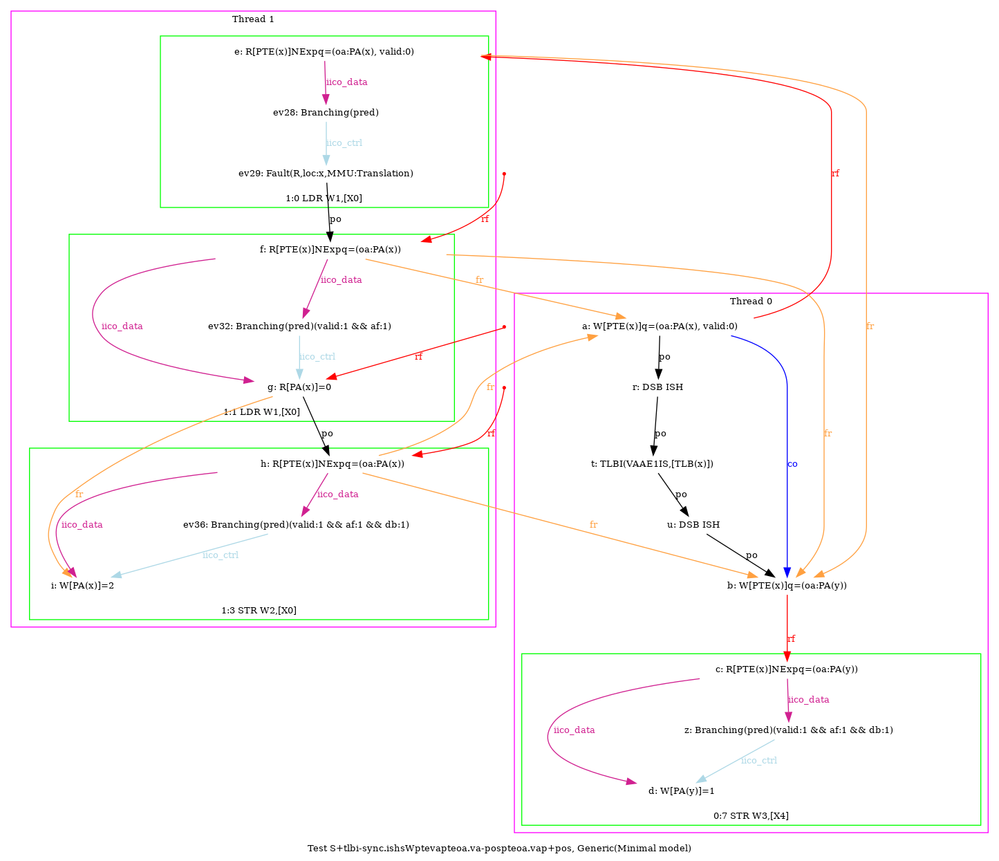
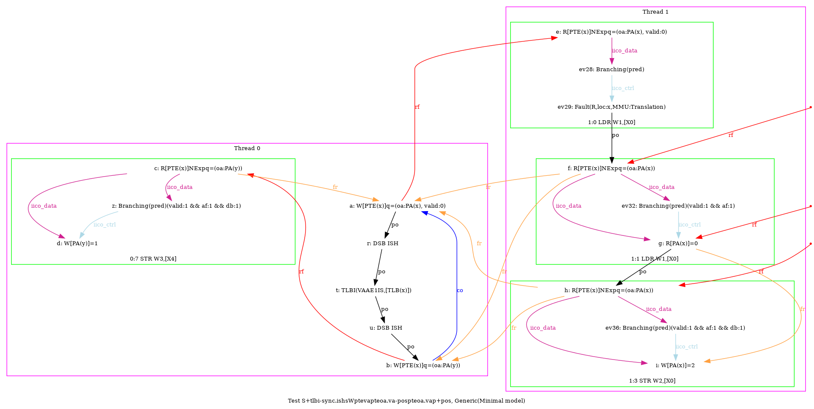

   …
AArch64 S+tlbi-sync.ishsWptevapteoa.va-pospteoa.vap+pos
"TLBI-sync.ISHsWWPteVAPteOA.VA PosWWPteOA.VAP Rfe PosRW CoePPteVA"
Variant=imprecise
Cycle=Rfe PosRW CoePPteVA TLBI-sync.ISHsWWPteVAPteOA.VA PosWWPteOA.VAP
Relax=[PteVA,TLBI-sync.ISHsWW,PteOA,PteVA]
Safe=Rfe Coe PosWW PosRW
Generator=diy7 (version 7.56+02~dev)
Com=Rf Co
Orig=TLBI-sync.ISHsWWPteVAPteOA.VA PosWWPteOA.VAP Rfe PosRW CoePPteVA
{ int x=0; int y=4;
0:X0=PTE(x); 0:X1=(oa:PA(x), valid:0); 0:X2=(oa:PA(y)); 0:X4=x;
1:X0=x;
}
P0 | P1 ;
STR X1,[X0] | LDR W1,[X0] ;
LSR X5,X4,#12 | MOV W2,#2 ;
DSB ISH | STR W2,[X0] ;
TLBI VAAE1IS,X5 | ;
DSB ISH | ;
STR X2,[X0] | ;
MOV W3,#1 | ;
STR W3,[X4] | ;
exists (1:X1=0 /\ [x]=2 /\ fault(P1,x,MMU:Translation) /\ ~fault(P0,x))